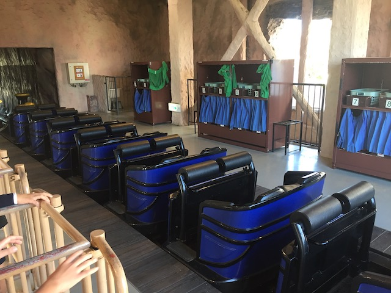

| |
.
Gran Montserrat Review

We're here at Parque Espana. Today, we'll be reviewing Gran Montserrat, the parks mine train. Now this is a very intersting mine train for several reasons. First off, it's themed to a real mountain in Spain that I got to visit. That's a cool fun little fact. But more importantly, this is the only Mack Mine Train. Yeah. Mack doesn't really make mine trains. But for some reason, they agreed to make Gran Montserrat. Not sure why as they haven't made a single other mine train. It's not even a coaster category of theirs on RCDB. So....I guess this is a rare credit as well. Well, it's not only unique by being the only Mack Mine Train. This also.....one could argue that this isn't even a mine train since it doesn't really act that much like a mine train and it definetly isn't like any other mine trains that I've ridden. So let's hop in the cars, pull down the lap bar, and get going. We roll around a turn, and begin climbing the lifthill. During this, we get a great view of the fake mountain the ride surrounds, Pyrenees, the hotel right across from the park, the second lifthill right next to the first one, and the log flume that also inhabits the fake model of Montserrat. Eventually, we reach the top, and head down the first drop. It's a curved first drop, not that big, but we gain a lot of speed (by mine train standards). We blast into the mountain. TAKE MONTSERRAT!!!, go around a curve, Go through some straight track, but beause it's sandwiched in a narrow canyon in the mountain, it feels faster. Plus, we're already going fairly fast. We go around another curve, we've lost some speed. But hey. A nice view of Pyrenees! We then head down another gradual drop that looks like straight track, but gives us some speed (Parque Espana really seems to like those kinds of drops). We head into a low to the ground turn, some nice laterals are found here, leading into a sort of upward helix. Unfortunetly, we lose a lot of speed here and wind up going into the second lifthill. Just a quick reminder that this is a mine train as I'm pretty sure it's globally mandated that all mine trains have at least 2 lift hills. Oh look. There's that 2nd lifthill we saw earlier. We then exit with another curved spiral drop. That gives us some speed, then we go into a curved drop in the other direction. SWEET!!! Now we have more speed and some laterals as well. This part of the ride is genuinely strong. If you like positive Gs, then this ride is gonna be a lot of fun. We then go into a curved hill, and sadly, this loses our speed. There's another downward helix, that gives us some speed. A turn out of that gives us some laterals. Another downward helix turn that leads us straight into the brake run. Damn. This really is a good mine train. OK, it may not be Big Thunder Mountain or Thunderration. But aside from those, this really is up there as far as mine trains go. The whole ride is pretty much all helixes. That may not sound like your cup of tea, in which case, you're probably not gonna be a fan of this ride. But considering how much most other mine trains just meander, it's nice to have one that just goes crazy with laterals and speed. I know you came to Parque Espana for Pyrenees, but I'd definetly give Gran Montserrat a ride as well. Not the best ride ever, but a really fun mine train worth at least one ride. Besides, there's probably not gonna be a line for it anyways.
6/10
Location: Parque Espana
Opened: 1994
Built by: Mack
Last Ridden: October 30, 2018
Gran Monserrat Photos



Home
|